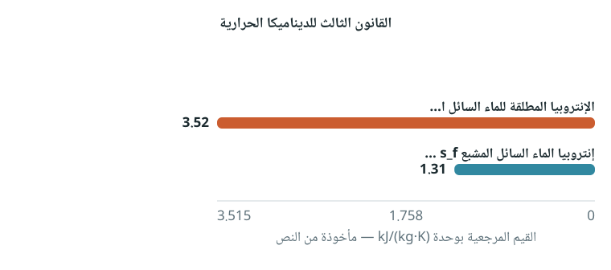

القانون الثالث للديناميكا الحرارية
Third Law of Thermodynamics
إنتروبيا البلورة التامة صفر عند الصفر المطلق. يوفّر مرجعاً لبناء مقياس إنتروبيا مطلق.
القانون الثالث للديناميكا الحرارية ينص أن إنتروبيا المادة البلورية النقية التامة صفر عند درجة حرارة الصفر المطلق. يصوغه Çengel بهذا اللفظ ويبرره جزيئياً: جزيئات المادة في الطور الصلب تتذبذب فتخلق عدم يقين في مواضعها، وهذه التذبذبات تتلاشى بانخفاض الحرارة وتصير الجزيئات ساكنة عند الصفر المطلق، وهي حالة نظام جزيئي أقصى وأدنى طاقة. ويصوغه Smith بأن الإنتروبيا المطلقة صفر لكل مادة بلورية تامة عند الصفر المطلق. ويضيف Atkins مفهوم الإنتروبيا المتبقية: إنتروبيا ناشئة عن عشوائية تبقى عند الصفر المطلق، كما في أول أكسيد الكربون البلوري. والقيمة العملية للقانون أنه يعطي حالة مرجعية لبناء مقياس إنتروبيا مطلق.
كيف تعمل الظاهرة؟
القانون الثالث للديناميكا الحرارية ينص أن إنتروبيا المادة البلورية النقية التامة صفر عند درجة حرارة الصفر المطلق. يصوغه Çengel بهذا اللفظ ويبرره جزيئياً: جزيئات المادة في الطور الصلب تتذبذب فتخلق عدم يقين في مواضعها، وهذه التذبذبات تتلاشى بانخفاض الحرارة وتصير الجزيئات ساكنة عند الصفر المطلق، وهي حالة نظام جزيئي أقصى وأدنى طاقة.
العلاقة بالأرقام
S = 0 لكل مادة بلورية تامة عند T = 0. والقيمة العملية للقانون أنه يعطي حالة مرجعية لبناء مقياس إنتروبيا مطلق، فتُحسب الإنتروبيا المطلقة بالتكامل S(T) = ∫₀ᵀ (C_p/T)·dT. ومثال: الإنتروبيا المطلقة للماء السائل المشبع عند 273.16 K تساوي 3.515 kJ/(kg·K)، بينما جداول البخار تعطيها صفراً لأن مرجعها مختلف.
مفاهيم متقاربة
القانون الثالث يختلف عن الأول والثاني: الأول يحفظ الطاقة، والثاني يحدد اتجاه العمليات، والثالث يثبت قيمة مرجعية للإنتروبيا عند الصفر المطلق. ولا يعني أن كل مادة إنتروبيتها صفر عند الصفر المطلق: المواد ذات العشوائية المتبقية كأول أكسيد الكربون البلوري تحتفظ بإنتروبيا متبقية. ولا يُخلط بجدول البخار الذي يستخدم الماء السائل المشبع عند 273.16 K كحالة مرجعية بإنتروبيا صفر.
حدود التطبيق
يُستثنى من القانون ما له إنتروبيا متبقية عند الصفر المطلق، كالزجاج والمواد غير البلورية وأول أكسيد الكربون البلوري. ولا يمكن الوصول إلى الصفر المطلق عملياً، فالقانون حدّ نظري لا حالة قابلة للقياس المباشر. ولا يُستخدم لتعريف الإنتروبيا في أنظمة لا تبلغ التوازن عند الحرارة المنخفضة.

| الكمية | القيمة | المصدر |
|---|---|---|
| الإنتروبيا المطلقة للماء السائل المشبع عند 273.16 K | 3.515 kJ/(kg·K) | [2] |
| إنتروبيا الماء السائل المشبع s_f عند 100 °م | 1.3072 kJ/(kg·K) | [5] |
المصادر
- 1 Thermodynamics: An Engineering Approach, 8th ed. — McGraw-Hill (2015). openlibrary.org/api/books?bibkeys=ISBN:9780073398174&format=json&jscmd=data · اطُّلع عليه 2026-11-21
- 2 Introduction to Chemical Engineering Thermodynamics, 8th ed. — McGraw-Hill (2018). openlibrary.org/api/books?bibkeys=ISBN:9781259696527&format=json&jscmd=data · اطُّلع عليه 2026-11-21
- 3 Atkins' Physical Chemistry, 11th ed. — Oxford University Press (2018). · اطُّلع عليه 2026-11-21
- 4 SI base unit: kelvin (K) — the 2018 revision of the SI — BIPM — Bureau International des Poids et Mesures (2019). www.bipm.org/en/si-base-units/kelvin · اطُّلع عليه 2026-11-21
- 5 NISTIR 5078: Thermodynamic Properties of Water — Tabulation from the IAPWS Formulation 1995 — NIST — National Institute of Standards and Technology (1998). nvlpubs.nist.gov/nistpubs/Legacy/IR/nistir5078.pdf · اطُّلع عليه 2026-11-21
استشهد بهذا المصطلح
الصيغتان مبنيتان من بيانات الصفحة نفسها: العنوان والتاريخ ورابط النسخة المنشورة.
القانون الثالث للديناميكا الحرارية — Third Law of Thermodynamics. (2026). ديوان المعرفة — انفراد. https://infiradev.com/diwan/terms/term-third-law.html
@misc{term-third-law2026,
title = {القانون الثالث للديناميكا الحرارية},
titleaddon = {Third Law of Thermodynamics},
howpublished = {{ديوان المعرفة — انفراد} — مرجع علمي عربي},
year = {2026},
url = {https://infiradev.com/diwan/terms/term-third-law.html},
urldate = {2026-11-25},
note = {مراجعة علمية: فحص التسليم — مراجعة المدير}
}
راجعه: فحص التسليم — مراجعة المدير · 2026-11-25 · آخر تحديث 2026-11-21